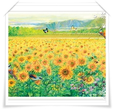

|
ประเพณีทำบุญวันขึ้นปีใหม่
นำเสนอโดย...พระมหาบุญโฮม ปริปุณฺณสีโล (ไชยฤทธิ์) วัดท่าไทร จ.สุราษฎร์ธานี |
|
ความหมาย ปีใหม่ เป็นเรื่องของวันเดือนหมุนเวียนมาบรรจบครบรอบ ๓๖๕ วัน หรือ ๑๒ เดือน ซึ่งสมมติกันว่าปีหนึ่งหมดไป ขึ้นวันเดือนใหม่ของอีก ปีหนึ่ง ก็เรียกกันว่าปีใหม่ แล้วเปลี่ยนนักษัตรประจำปีใหม่ปี ชวด ฉลู ขาล เถาะ เป็นต้น และเปลี่ยนพุทธศักราช (พ.ศ.) ใหม่ ความเป็นมา ประเพณีปีใหม่ของไทยสมัยอยุธยาและรัตนโกสินทร์ ตั้งแต่ รัชกาลที่ ๑ ถึงรัชกาลที่ ๕ ตอนต้น ถือวันทางจันทรคติขึ้น ๑ ค่ำ เดือน ๕ เป็นวันขึ้นปีใหม่ ในพระราชพีธีสิบสองเดือนพระราชนิพนธ์ พระบาทสมเด็จพระจอมเกล้าเจ้าอยู่หัว มีความว่าพระราชพิธีขึ้นปีใหม่ วันขึ้น ๑ ค่ำ เดือน ๕ ซึ่งพระบาทสมเด็จพระจอมเกล้าเจ้าอยู่หัว รัชกาลที่ ๔ ทรงพระราชดำริว่าในกฎมนเทียรบาล มีการสมโภชและเลี้ยงลูกขุน ซึ่งตรงกับการเลี้ยงโต๊ะอย่างฝรั่งจึงทรงกำหนดการพระราชพิธีทรงบำเพ็ญพระราชกุศลขึ้นเวลาเช้า มีการพระราชกุศลสดับปกรณ์ พระบรมอัฐิ ณ พระที่นั่งอมรินทรวินิจฉัย เวลาค่ำเชิญพระสยามเทวาธิราชและเชิญเจว็ดรูปพระภูมิเจ้าที่จากหอแก้วออกมาตั้งที่บุษบกมุขเด็จพระที่นั่งดุสิตมหาปราสาทตั้งเครื่องสังเวยที่พื้นชาลาหน้ามุขเด็จ ตั้งพระราชอาสน์ที่ประทับ ณ ศาลาคต มีละครหลวงแสดง และตั้งโต๊ะพระราชทานเลี้ยง ครั้งต่อมาในรัชกาลที่ ๕ ได้เปลี่ยนวันขึ้นปีใหม่เป็นทางสุริยคติ ถือวันที่ ๑ เมษายน เป็นวันขึ้นปีใหม่และโปรดให้ใช้รัตนโกสินทรศก ในการนับปี ตั้งแต่ ร.ศ. ๑๐๘ เป็นต้นมา สำหรับพระราชพิธีปีใหม่ นั้นทรงพระกรุณาโปรดเกล้าฯ ให้พระบรมวงศานุวงศ์ฝ่ายหน้าเสด็จ เข้าไปรับพระราชทางเลี้ยง ณ ท้องพระโรงกลางพระที่นั่งจักรีมหาปราสาทพระราชทานฉลากแก่พระบรมวงศานุวงศ์ และข้าราชการบางคน ครั้นพระราชทานสิ่งของตามฉลากแล้วเสด็จพระราชดำเนินมาที่ชาลาหน้าพระที่นั่งดุสิตมหาปราสาท ทอดพระเนตรละครหลวงแล้วเสด็จฯ กลับ ส่วนวันขึ้น ๑ ค่ำ เดือน ๕ ซึ่งเป็นวันพระราชพิธีขึ้นปีใหม่ใน รัชกาลที่ ๔ นั้นกำหนดเป็นพระราชพิธีบวงสรวงพระสยามเทวาธิราชตลอดมาจนทุกวันนี้ถึงแผ่นดินพระบาทสมเด็จพระมงกุฏเกล้าเจ้าอยู่หัว(รัชกาลที่ ๖) ทรงพระกรุณโปรดเกล้าฯ ให้ใช้พุทธศักราชแทนรัตนโกสินทรศก ตั้งแต่ พ.ศ. ๒๔๕๕ และต่อมาใน พ.ศ. ๒๔๕๖ โปรดให้รวมพระราชพิธีสัมพัจฉรฉินท์เถลิงศกสงกรานต์พระราชพิธีศรีสัจจปานกาลถือน้ำพระพิพัฒน์สัตยาเข้าด้วยกันเรียกว่าพระราชพิธีตรุษสงกรานต์ เริ่มการพระราชพิธีตั้งแต่วันที่ ๒๘ มีนาคม ถึงวันที่ ๓ เมษายนการพระราชพิธีในวันที่ ๒๘ มีนาคมเรียกว่าตั้งน้ำวงด้ายมีพระสงฆ์เจริญพระพุทธมนต์และสวดภาณวารในพระที่นั่งอมรินทรวินิจฉัย วันที่ ๒๙ มีนาคม เลี้ยงพระ อ่านประกาศสังเวยเทวดา สวดอาฎานาฏิยสูตร ยิงปืนมหาฤกษ์ มหาชัย มหาจักรี มหาปราบยุค วันที่ ๓๐ มีนาคม พระราชทานน้ำพระมหาสังข์ทรงเจิมแก่พระราชวงศ์ วันที่ ๓๑ มีนาคม พระสงฆ์เจริญพระพุทธมนต์วันที่ ๑ เมษายน เสด็จสรงน้ำพระบรมอัฐิและพระอัฐิ ณ หอพระธาตุมณเฑียร เลี้ยงพระ ในพระที่นั่งอมรินทรวินิจฉัย สรงมูรธาภิเษกที่ชานหน้าพระที่นั่งจันทรทิพโยภาส (พระที่นั่งราชฤดีในปัจจุบัน) ถ้ามีพระราชวงศ์จะ โสกันต์ก็กำหนดในงานพระราชพิธีนี้สดับปกรณ์พระบรมอัฐิและ พระอัฐิ เวลาบ่ายมีงานอุทยานสโมสร กระทรวงวังจัดที่ลงพระนาม และนามถวายพระพร วันที่ ๒ เมษายน เสกน้ำพระพิพัฒน์สัตยา ณ พระอุโบสถวัดพระศรีรัตนศาสนาราม แล้วเสด็จฯ ไปสรงน้ำ พระพุทธรูปที่หอราชพงศานุสร หอราชกรมานุสร พระศรีรัตนเจดีย์พระมณฑป หอพระคันธารราษฎร์และพระวิหารยอด แล้วสดับ ปกรณ์พระบรมอัฐิสมเด็จพระบวรราชเจ้าและพระอัฐิพระบรมวงศานุวงศ์ที่หอพระนากเวียนเทียนสมโภชพระพุทธมหามณีรัตนปฏิมากร วันที่ ๓ เมษายน พระบรมวงศานุวงศ์และข้าราชการถือน้ำพระพิพัฒน์สัตยา ถือน้ำแล้วไปถวายบังคมพระบรมอัฐิ สมเด็จพระบูรพมหากษัตริยาธิราชเจ้า ที่หน้าพระที่นั่งสนามจันทร์ ในกำแพงแก้วพระที่นั่งอมรินทรวินิจฉัย ครั้นต่อมาในรัชกาลที่ ๘ คณะผู้สำเร็จราชการแทนพระองค์ใน พระปรมาภิไธยพระบาทสมเด็จพระปรเมนทรมหาอานันทมหิดล ได้ประกาศให้ใช้วันที่ ๑ มกราคม เป็นวันขึ้นปีใหม่ เพราะวันที่ ๑ มกราคม ใกล้เคียงวันแรม ๑ ค่ำเดือนอ้าย เป็นการใช้ฤดูหนาวเริ่มต้นปี และเป็นการสอดคล้องตามจารีตประเพณีโบราณของไทยต้องตามคติแห่งพระบวรพุทธศาสนาและตรงกับนานาประเทศ โดยให้เริ่มใช้ตั้งแต่วันที่ ๑ มกราคม พ.ศ. ๒๔๘๔ เป็นต้นไป จึงได้กำหนดการพระราช พิธีขึ้นปีใหม่ มีรายละเอียดดังนี้ วันที่ ๓๑ ธันวาคม พ.ศ. ๒๔๘๓ เวลา ๑๖ นาฬิกา ๓๐ นาที คณะผู้สำเร็จราชการแทนพระองค์มายัง พระที่นั่งอมรินทรวินิจฉัย พระสงฆ์เจริญพระพุทธมนต์ วันที่ ๑ มกราคม พ.ศ. ๒๔๘๔ เวลา ๑๐ นาฬิกา ๓๐ นาที คณะผู้สำเร็จราชการแทนพระองค์ไปสรงน้ำพระพุทธมหามณีรัตนปฏิมากรที่ในพระอุโบสถวัดพระศรีรัตนศาสดารามแล้วมายัง พระที่นั่งอมรินทรวินิจฉัย พระสงฆ์รับพระราชทานฉันแล้วสดับปกรณ์ ผ้าคู่พระบรมอัฐิสมเด็จพระบูรพมหากษัตริยาธิราช พระอัฐิสมเด็จพระบรมวงศ์วันนี้มีการลงชื่อถวายพระพรที่ในพระบรมมหาราชวัง ตั้งแต่ เวลา ๑๐ นาฬิกาถึง ๑๖ นาฬิกาวันที่ ๒ มกราคม พ.ศ. ๒๔๘๔ เวลา ๙ นาฬิกา คณะผู้สำเร็จราชการแทนพระองค์ไปสรงปูชนียวัตถุ คือ พระพุทธมหามณีรัตนปฏิมากรและพระพุทธรูปสำคัญ แล้วสดับปกรณ์ผ้าคู่พระบรมอัฐิสมเด็จพระบวรราชเจ้า กรมพระราชวังบวรและพระอัฐิพระราชวงศ์ในรัชกาลพระบาทสมเด็จพระปรมินทรมหาภูมิพลอดุลยเดช เมื่อ พ.ศ.๒๔๙๐ คณะผู้สำเร็จราชการแทนพระองค์โปรดให้ยกการพระราชกุศลสดับปกรณ์ผ้าคู่ในวันขึ้นปีใหม่ไปใช้ในพระราชพิธีสงกรานต์ ซึ่งฟื้นฟูขึ้นใหม่ตามโบราณราชประเพณีซึ่งเป็นเทศกาล สงกรานต์ในวันที่ ๑๓ - ๑๔ - ๑๕ เมษายน ต่อมา พ.ศ. ๒๕๐๐ ทรงพระกรุณาโปรดเกล้าฯ ให้งดการ พระราชกุศลสวดมนต์เลี้ยงพระในวันขึ้นปีใหม่ เปลี่ยนเป็นเสด็จออก ทรงบำเพ็ญพระราชกุศลทรงบาตรวันขึ้นปีใหม่ พุทธศักราช ๒๕๐๑ มีรายละเอียดดังนี้วันที่ ๑ มกราคม พ.ศ. ๒๕๐๑ พระบาทสมเด็จพระเจ้าอยู่หัว และสมเด็จพระนางเจ้าฯพระบรมราชินีนาถเสด็จพระราชดำเนินโดย รถยนต์พระที่นั่งจากพระตำหนักจิตรลดารโหฐานพระราชวังดุสิตไปพระบรมมหาราชวังทรงจุดธูปเทียนถวายนมัสการพระพุทธปฏิมาที่พระแท่นนพปฎลมหาเศวตฉัตรภายในท้องพระโรงเวลา ๗ นาฬิกา เสด็จฯลงยังสนามหน้าพระที่นั่งจักรีมหาปราสาท ทรงจุดธูปเทียนเครื่องทองน้อยแล้วทรงบาตรพร้อมด้วย พระบรมวงศานุวงศ์ องคมนตรี คณะรัฐมนตรี ข้าราชการ ทุกกระทรวง ทบวง กรมโดยจัดเป็นสาย ๆ พระบาทสมเด็จพระเจ้าอยู่หัวและพระบรมวงศานุวงศานุวงศ์ ๕๐ รูปนอกนั้นสายละ ๒๕ รูป รวมพระสงฆ์ ๓๐๐ รูป เสร็จแล้วเสด็จฯ ขึ้น งานนี้แต่งเครื่องแบบปรกติขาว งานนี้มีสังข์ แตร ปี่พาทย์ ประโคม บรรเลงตั้งแต่เสด็จทรงจุดเทียนจนเสด็จขึ้นวันนี้ เวลา ๙ นาฬิกา จนถึงเวลา ๑๗ นาฬิกา สำนักพระราชวัง จะได้จัดที่สำหรับลงพระนามและนามถวายพระพรไว้ที่พระบรมมหาราชวัง ครั้ง พ.ศ. ๒๕๐๑ ทรงพระกรุณาโปรดเกล้าฯ ให้เปลี่ยนการ พระราชพิธีบำเพ็ญพระราชกุศลทรงบาตรขึ้นปีใหม่ ในวันที่ ๑ มกราคมเป็นวันที่ ๓๑ ธันวาคม ซึ่งเป็นวันสิ้นปีต่อมาในปี พ.ศ. ๒๕๑๘ พระราชพิธีทรงบำเพ็ญพระราชกุศล ทรงบาตรขึ้นปีใหม่ ได้ทรงพระกรุณาโปรดเกล้าฯ ให้จัดเป็นงาน ส่วนพระองค์ ณ พระราชฐานที่ประทับพิธีของราชการและประชาชนสำหรับงานของทางราชการและประชาชนในวันขึ้นปีใหม่ก็จะมีตั้งแต่คืนวันที่ ๓๑ ธันวาคม จนถึง วันที่ ๑ มกราคมเช่นเคยยึดถือมาเดิมคือในวันสิ้นปี หรือวันที่ ๓๑ ธันวาคม ทางราชการหรือประชาชนในท้องถิ่นต่างๆ จัดให้มีการรื่นเริง และมหรสพมีพระราชดำรัสในพระบาทสมเด็จพระเจ้าอยู่หัวพระราชทานพรปีใหม่ แก่ประชาชน สมเด็จพระสังฆราชประทานพรปีใหม่แก่พุทธศาสนิกชนและบุคคลสำคัญของบ้านเมือง เช่น ประธานรัฐสภา นายกรัฐมนตรี ประธาน ศาลฎีกากล่าวคำปราศรัย พอถึงเวลา ๒๔.๐๐ น. วัดวาอารามต่างๆ จะจัด พระสงฆ์เจริญชัยมงคลคาถา ย่ำฆ้อง กลอง ระฆัง เพื่อแสดงความยินดีต้อนรับรุ่งอรุณแห่งชีวิตของประชาชนในปีใหม่โดยทั่วกัน ตอนเช้าวันที่ ๑ มกราคมก็จะมีการทำบุญตักบาตรสุดแท้แต่การจัด บางปีมีการจัดร่วมกัน บางปีบางท้องที่ก็ไปทำบุญตักบาตรกันที่วัด หรือที่ใดๆ บางท่านบางครอบครัวก็มีการทำบุญตักบาตร หรือการทำบุญเลี้ยงพระที่บ้านที่สำนักงานของตน วัดท่าไทร จัดให้มีพิธีเค้าท์ดาวน์นับถอยหลัง ส่งท้ายปีเก่า-ต้อนรับปีใหม่ เป็นประจำทุกปี
วัดท่าไทร
ร่วมกับประชาชนพุทธบริษัท จัดให้มีพิธีเค้าท์ดาวน์นับถอยหลัง ส่งท้ายปีเก่า-ต้อนรับปีใหม่
เป็นประจำทุกปี ในวันที่ 31 ธันวาคม ของทุกปี โดยเริ่มพิธีตั้งแต่เวลา
๒๓.๐๐ น. เป็นต้นไป จนกระทั่งเสร็จพิธี(ประมาณ ๐๐.๓๐ น. ของวันที่
๑ มกราคม) เพื่อเป็นการอนุรักษ์ประเพณี วัฒนธรรมอันดีงามวิถีพุทธของไทย
ร่วมเจริญจิตภาวนาฝึกอบรมจิตใจ เสริมสร้างบารมีธรรม เพิ่มสิริมงคล
เสริมดวงชะตาให้แก่ชีวิต รับพร รับสิริมงคล และรับน้ำพระพุทธมนต์จากพระสงฆ์
โดยมี พระเดชพระคุณ พระเทพพิพัฒนาภรณ์ (พระมหาชูชาติ) เจ้าอาวาสวัดท่าไทร
และเจ้าคณะจังหวัดสุราษฎร์ธานี เป็นประธานสงฆ์ ณ ศาลาการเปรียญวัดท่าไทร
ต.ท่าทองใหม่ อ.กาญจนดิษฐ์ จ.สุราษฎร์ธานี
|